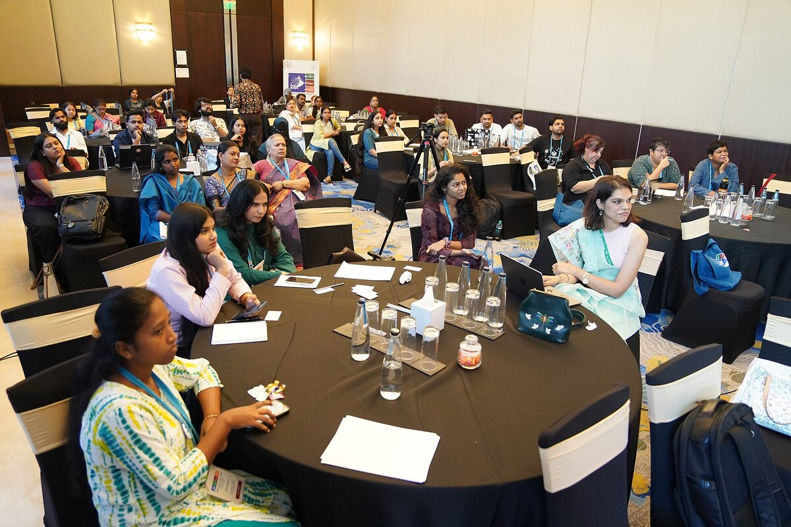

B2 · Work & Career
A Developer's Job Interview
A full technical interview, from the opening question to the closing handshake.
Play the audio and follow along, then read it again on your own. Tap or hover over a highlighted word to see what it means.
Interviewer: Good morning, and thank you for coming in. Could you start by introducing yourself and telling us about your previous experience in the field?
Douglas: Good morning. My name is Douglas, and I've been working as a software developer for the past seven years. Most of my experience is in web development — JavaScript, React and Node.js — and I've also worked with databases such as MongoDB and MySQL.
Interviewer: Great. Can you give us an example of a project you worked on that you're particularly proud of?
Douglas: Sure. I was responsible for building a web application that let patients book appointments with their doctors. I used React on the front end and Node.js on the back end. The application had to handle a lot of traffic, so I had to optimize the code to make sure it stayed fast as it scaled. I also integrated it with a payment gateway so that users could pay for their appointments online.
Interviewer: That sounds impressive. Can you tell us about a challenging technical problem you faced, and how you solved it?
Douglas: One of the hardest problems I've run into involved real-time data streaming. The data was arriving at a very high rate and we needed to process it as it came in, not overnight. I used Apache Kafka and Apache Spark to handle the stream and process it efficiently. It took a while to get right, but the solution met the requirements the client had set.
Interviewer: Excellent. How do you keep yourself up to date with the latest trends and technologies?
Douglas: I read technical blogs, and I go to conferences and local meetups whenever I can. I'm active in a few online communities where developers share what they've learned. I also experiment on my own — I build small side projects with anything new, because reading about a tool and actually using it are two different things.


Interviewer: Finally, could you tell us about your experience working in a team?
Douglas: I've worked in both small and large teams. I think communication is the thing that decides whether a team works, so I try to communicate clearly and often, and I'd rather over-share than let someone find out too late. I like collaborating, and I'm always willing to help a colleague who's stuck. In my last two jobs we used Git and Jira to manage and track our work, and I'm comfortable with agile methods like Scrum.
Interviewer: Thank you for your time, and for sharing your experience with us. We'll be in touch soon.
Key Vocabulary
- the field the professional area someone works in
- front end the part of an application the user actually sees and clicks on
- back end the part of an application that runs on the server, out of the user's sight
- to optimize to change something so that it works faster or uses fewer resources
- to scale to keep working well as the amount of work or number of users grows
- payment gateway a service that handles card payments on behalf of a website
- to run into a problem to meet a problem you did not expect
- real-time happening immediately, as the events themselves happen
- to meet the requirements to satisfy what was formally asked for
- to keep up to date to stay informed about the newest developments
- meetup an informal local gathering of people who share a professional interest
- side project something you build in your own time, outside your paid work
- to be stuck to be unable to make progress on a problem
- agile a way of running projects in short cycles, adjusting as you go
- to be in touch to contact someone
A Developer's Job Interview — B2 · Work & Career · Renan the Teacher, English Language Academy · https://renangrossi.github.io/englishclasses/reading/b2/it-interview.html
Interactive Exercises
Practice
Complete each exercise, then click Submit to see your score and an explanation for every answer.
Speaking & Writing
Discussion
There are no right answers here — use these to practice speaking, or write a short answer to each.
- Which of the five questions would you find hardest to answer about your own work? Why?
- Douglas answers the teamwork question by talking about communication rather than technical skill. Was that a good choice?
- How do you keep up with developments in your own field?
- Some companies replace the interview with a practical task. Which would show your ability better, and why?
- Answer this in about 100 words, as you would in the interview: “Tell us about a challenging problem you faced and how you solved it.” Name the problem, say why it was hard, say what you did, and end with the result — the same four steps Douglas uses.